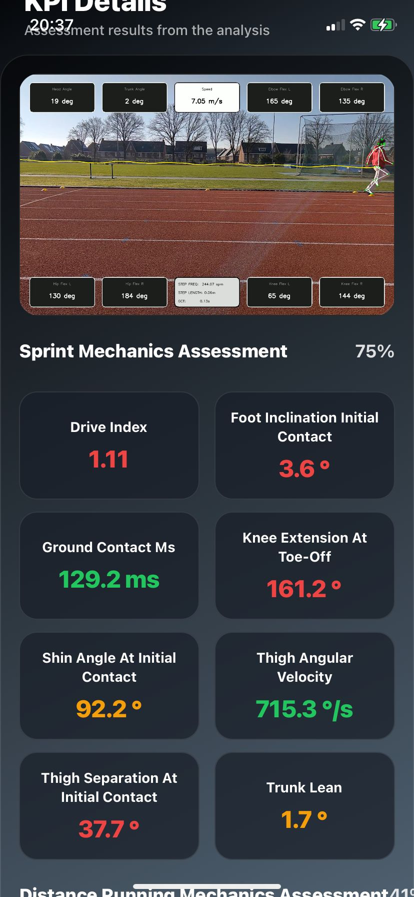
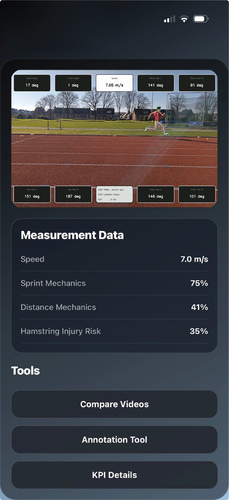
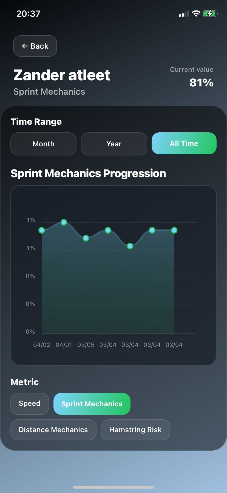
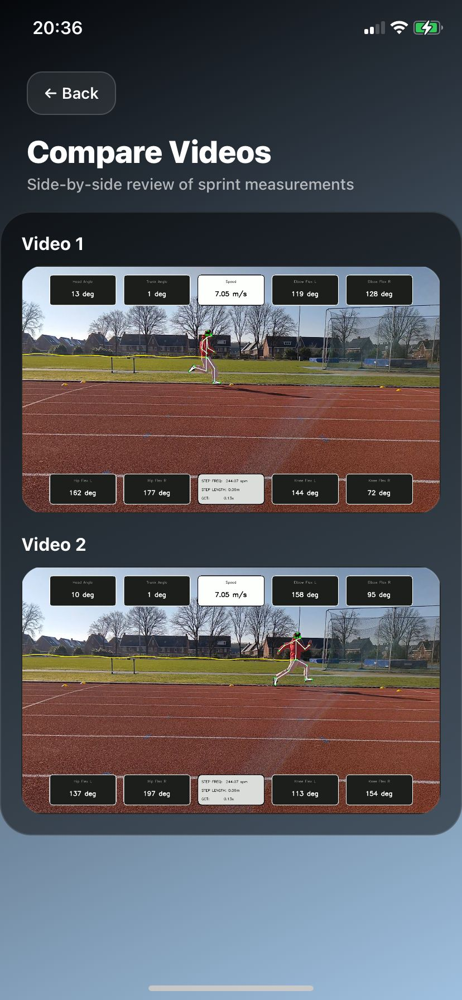
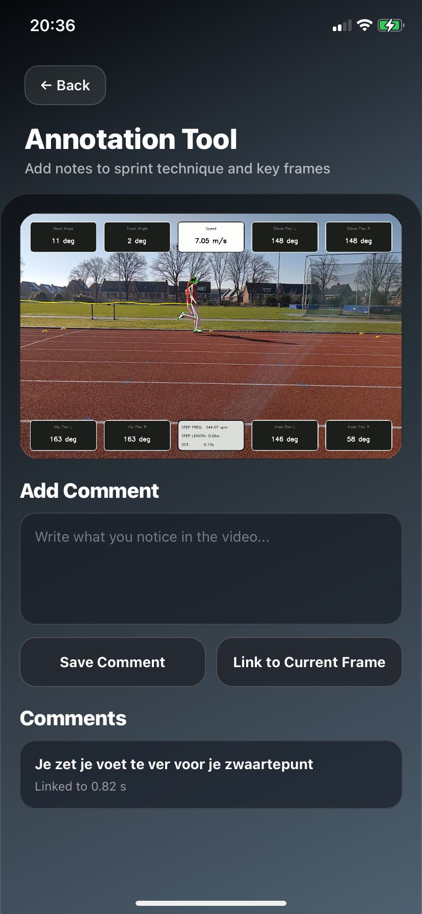

Improve sprint performance with AI-powered motion analysis
AI Athletics helps athletes and coaches better understand sprint mechanics, improve speed, reduce wasted energy, and reduce injury risks through markerless motion tracking and sprint analysis.
Increase Sprint Speed
Improve sprint mechanics and movement efficiency to convert more force into forward speed.
Perform More High-Intensity Sprints
Reduce unnecessary movement and energy waste so athletes can sustain high-intensity efforts longer.
Reduce Injury Risks
Identify potentially harmful movement patterns and asymmetries before they become injuries.
How the MVP works
On-site recording
We visit your team or athletes, set everything up, and record sprint videos on location.
AI processing
The sprint videos are processed using markerless motion tracking and biomechanical analysis.
Results in the beta app
Athletes and coaches receive access to the beta platform with sprint scores, injury risk analysis, and video feedback tools.
What you receive
Sprint & Injury Form Scores
Clear sprint form and injury risk KPI scores for athletes and coaches.

Motion Tracking Video Overlays
View detailed sprint mechanics using markerless motion tracking technology.

Progress Over Time
Track improvements in sprint form, performance, and injury risk.

Comparison Tools
Compare sprint videos and biomechanics side-by-side for deeper insights.

Annotation Tools
Coaches can annotate sprint videos to provide contextual feedback.

Team Overview
View athlete measurements, trends, and sprint insights in one place.

Pricing
First Measurement
Includes onboarding, account setup, and coaches access.
Follow-up Measurement
Same analysis workflow without onboarding costs.
Team Discounts
10 athletes → everyone receives 10% discount
20+ athletes → everyone receives 20% discount
Early adopter advantages
Early users receive beta access to the AI Athletics platform, future discounts,
free tokens for upcoming app features, and priority access at full launch.